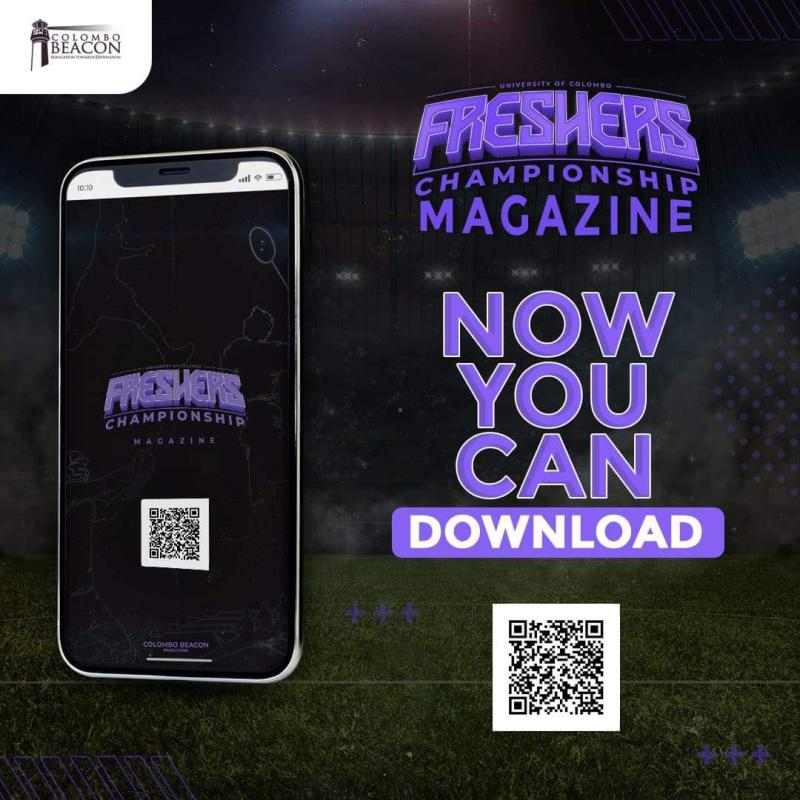
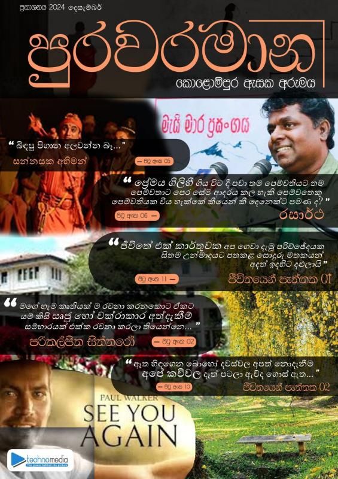

🌿 GreenHeavenDAQ: Smart Home Garden Monitoring System
IoT-based system using ESP32 and sensors to monitor soil moisture, temperature, and humidity. Data is logged and visualized via a Streamlit dashboard. Includes real-time alerts and historical trends.
Live Demo → | GitHub →Kids-Audio-Project 🔊
An interactive audio learning tool for children built with Python and Pygame. Features sound recognition games and a simple GUI to help kids learn phonics and vocabulary.
GitHub →Centrifugal-Feeder-Bottle-Unscrambler-Machine
Automated bottle orientation system using a centrifugal feeder, controlled by a PLC with HMI interface. Includes CAD design, simulation, and real-time monitoring.
GitHub →Ionosphere-Neural-Network-Classification
Neural network model built with TensorFlow/Keras to classify radar returns from the ionosphere. Achieved 94% accuracy on test data. Includes data preprocessing and hyperparameter tuning.
GitHub →Industrial Automation
AI & Data Science
IT & Full Stack
Building a Predictive Maintenance Dashboard for Industry 4.0
How I combined simulated PLC data with an Isolation Forest model and deployed it with Streamlit.
Read on Medium →OPC-UA vs MQTT: A Practical Guide for IIoT
Understanding the protocols that connect industrial devices to the cloud.
Read on Medium →Using YOLOv8 for PPE Detection in Manufacturing
End-to-end computer vision project for industrial safety.
Read on Medium →STEM Mentor
Taught Python and basic electronics to underprivileged students. Designed a 4-week curriculum culminating in a mini-project showcase.
Environmental Cleanup Drive
Organized a team of 30 volunteers to clean a local beach; collected over 200 kg of waste.
Workshop Assistant
Assisted in a 2-day Arduino workshop for high school girls, helping 20 participants complete their first robotics project.
SEDS UOC – Assistant Secretary
Assisted in organizing space-tech workshops and outreach events. Managed documentation and member coordination.
Colombo Beacon – Top Board Director
Led strategic planning for annual events including the Freshers' Championship. Oversaw marketing and sponsor relations.
Colombo Beacon – Middle Board Director
Coordinated volunteer teams for events, managed social media campaigns, and contributed to content creation.
Techno Media – Head of Content Writing
Led a team of writers to produce articles, event coverage, and technical blogs. Ensured quality and timely publication.

';">The Freshers Championship'23 Magazine
Officially released! The inaugural magazine for the Freshers' Championship, a first in university history.
Check it via Drive →
පුරවරමාන - කොළොම්පුර ඇසක අරුමය
First Edition
Welcome to the official magazine issue of the Department of Content Writing, Techno Media of the Faculty of Technology, University of Colombo is now released. We are proudly presenting the first edition of the magazine in March 2024. This is presented by the Department of Content Writing and Department of Designing for the lovers of the creativity of the writer.💫 We invite you to read this new journey began as "පුරවරමාන". This is the "කොළොම්පුර ඇසක අරුමය" of us creatively ✨.
Check it via Drive →Check it via Facebook →

';">පුරවරමාන - කොළොම්පුර ඇසක අරුමය
Second Edition
This is the “පුරවරමාන Second Edition”, “කොළොම්පුර ඇසක අරුමය”, a creation shaped by our creativity ✨.
Check it via Drive →
NEO INK 1.0 - Revolutionizing Words in a Digital Era
The official workshop series of the Department of Content Writing, Techno Media. Where creativity meets words. 💫
Explore the Presentation Presentation →AI for Industrial Applications
Explored predictive maintenance case studies, implemented a simple anomaly detection model in Python.
Explore →AWS Cloud Practitioner Essentials
Learned core cloud concepts, EC2, S3, and IAM. Prepared for certification exam.
Certificate →Conducted: Introduction to Git & GitHub
Led a 2-hour hands‑on workshop for 40+ students, covering branching, merging, and collaborative workflows.
Slides & Materials →